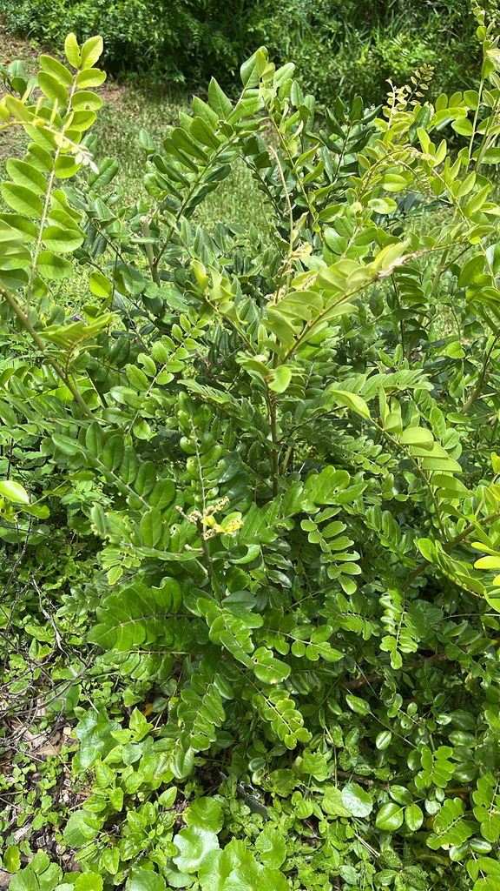

- A Florida native coastal shrub with one of the more distinctive seed pod structures in the collection — the pods constrict tightly between each seed, creating a beaded appearance that inspired both the common name and the species classification.
- Produces large clusters of bright yellow pea-like flowers on a native shrub that tolerates salt spray, sand, and coastal conditions that would challenge most ornamentals.
- An important nectar plant for the Cassius Blue butterfly, which uses it as a larval host as well. The combination of nectar and host plant functions in one species is valuable in a butterfly garden.
- All parts are toxic. The seeds in particular contain cytisine, a nicotinic alkaloid.
Native to Florida coastal habitats — found on shell mounds, coastal hammocks, and disturbed shorelines. Also native to the Caribbean and subtropical Atlantic coasts. Member of Fabaceae — the legume family.
- The Necklace Pod is named for its seed pods: long, slender, and pinched tightly between each seed so the pod looks like a string of beads - one of the most distinctive fruits in the collection and the surest way to identify the plant. Above them stand showy upright spikes of bright yellow pea-flowers, produced over much of the year and a strong draw for pollinators.
- It is a coastal shrub at home on shell mounds, dune edges, and the backs of beaches, with silvery, soft-haired foliage that helps it cope with sun and salt. Two forms are often sold under the same name: a Florida native form and a silvery-leaved tropical form widely planted as an ornamental - the very silvery foliage usually seen in cultivation points to the introduced form.
- The whole plant is toxic - the seeds contain cytisine, a nicotine-like alkaloid - so the bead-like pods are for looking, not for handling by children.
A documented larval host and nectar plant for the Cassius Blue butterfly. Bees and other pollinators visit the yellow flowers. The dense foliage provides coastal habitat structure.
Bright yellow, pea-shaped, in large upright clusters. Showy and produced over a long season.
The ID feature: tightly constricted between each seed, creating a beaded or necklace appearance. Distinctive.
Pinnately compound with oval leaflets. Silvery-gray-green, giving a soft texture.
Rounded evergreen shrub, 6 to 12 feet tall and wide. Salt and drought tolerant.
The constricted necklace-bead pods are unmistakable when present. The silvery compound foliage and yellow flower clusters are the seasonal markers.
Do not eat any part of this plant. It contains cytisine, a toxic alkaloid with nicotine-like effects, most concentrated in the seeds.
It's toxic to dogs as well, where cytisine causes vomiting, drooling, and muscle tremors and can become serious. Keep pets away from the seed pods.


- © Franky McArthur (CC-BY-NC), via iNaturalist
- © Randall Carter (CC-BY-NC), via iNaturalist